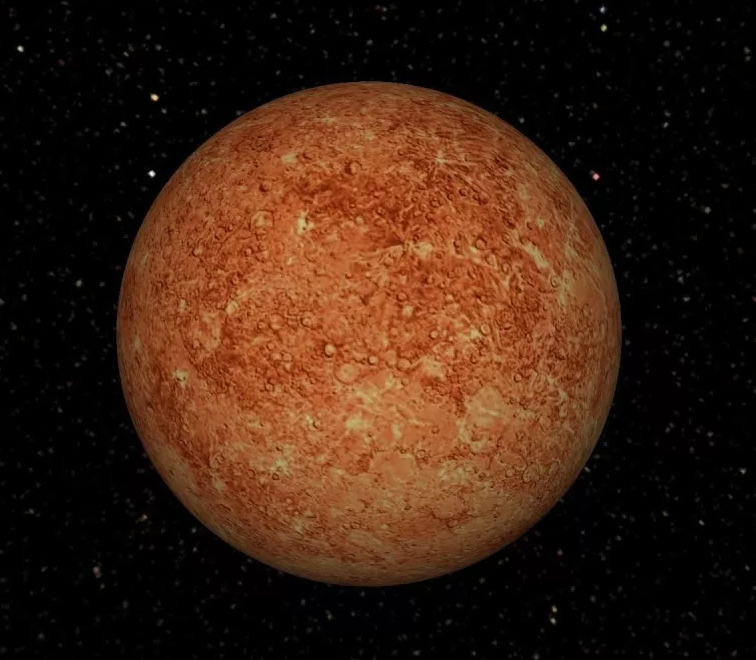

Меркурий
Меркурий — ближайшая к Солнцу планета Солнечной системы, наименьшая из планет земной группы. Её период обращения вокруг Солнца составляет всего 87,97 земных суток — самый короткий среди всех планет Солнечной системы.
Видимое расстояние Меркурия от Солнца, если смотреть с Земли, никогда не превышает 28°. Эта близость к Солнцу означает, что планету можно увидеть только в течение небольшого времени после захода или до восхода солнца, обычно в сумерках. В телескоп у Меркурия можно увидеть фазы, изменяющиеся от тонкого серпа до почти полного диска, как у Венеры и Луны, а иногда он проходит по диску Солнца. Период изменения фаз Меркурия равен синодическому периоду его обращения — примерно 116 дней.
Ось Меркурия имеет наименьший наклон из всех планет Солнечной системы (около 1/30 градуса). Однако эксцентриситет орбиты у него максимальный среди них, и поэтому в перигелии расстояние Меркурия от Солнца составляет всего около двух третей (66 %) от его расстояния в афелии. Поверхность Меркурия покрыта ударными кратерами и внешне похожа на лунную, что указывает на отсутствие внутренней геологической активности в последние миллиарды лет. Поскольку атмосферы у Меркурия почти нет, температура его поверхности меняется сильнее, чем на любой другой планете Солнечной системы: от −173 °C ночью до +427 °C днём в экваториальных регионах. Полярные области постоянно охлаждены ниже −93 °С. Известных природных спутников у планеты нет.

Главное